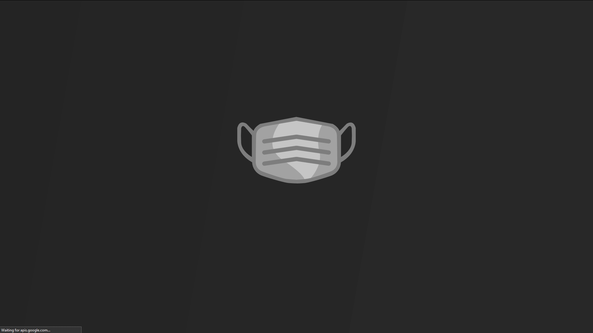

Wear A Mask (WAM for short) is Aidan Smith, Lisa Chai, and I’s submission for the 2020 Congressional App Challenge (CaC).
This is our demo video for CaC
WAM is an online platform which enables the community to leave covid related reviews on public buildings. We initially wanted to have a covid heatmap and a maximum capacity recommendation (calculated from building size and social-distancing recommendations), but those were not achievable as we only had 3 weeks to build the entire project.
The app is not live but the source code for both the client and the server can be found on Aidan’s GitHub:
There was little debate over what to use for the frontend, as Aidan is an avid Vue fan and I didn’t have experience with anything else (although admittedly, it would’ve been a good learning experience). We chose Google’s Firebase for hosting the Vue app, which was apparently unneeded for the challenge.
The map actually seen is Mapbox, while the searchbar implements Google’s various APIs (which were a pain to add).
As for the backend, we used Flask to build a simple, RESTful server that could handle authentication and writing/retrieving reviews from a database. The API was hosted on a free Heroku account, which conveniently had PostgreSQL plugins that made it extremely easy to hook up the API to.

Pretty neat, right?
This was achieved using just a setInterval for the timing and a style binding for the effect clip-path.
setInterval(() => { this.loadpercent += 1; }, 4.5);
<img
class="fill"
:style="`clip-path:polygon(0 0, ${loadpercent}% 0, ${loadpercent}% 100%, 0% 100%);`"
:src="require('@/assets/maskfull.svg')">
Apparently mapbox’s loading slows the entire stack, so the loading time of the animation actually accurately reflects the loading of the site.
To get this transition, the marker used everywhere else on the map is scaled up and positioned, and the ::after psuedo-element which contains text is visible.
left: 10% !important;
top: 40% !important;
transform: scale(4.2) !important;
transition: 1s all;
&::after {
opacity: 1;
}
Then when the user is authenticated, several things happen to return control of the marker to mapbox.
// first the app redirects the user to the root route
this.$router.push({ path: '/' });
// a route watcher detects this and sets a 1s timeout which sets this.small to true
setTimeout(() => { this.small = true; }, 1000);
// this computed object will start out with fixed, then transition for 1s, then small
getClass() {
if (this.$route.path === '/login') {
return 'fixed';
}
if (this.boring) {
return 'small';
}
return 'transition';
},
The marker will start with a fixed position due to the override from .fixed, then whatever style from .transition is applied, then .small is applied which removes all the styles from the other classes.
Overall, this was a very fun project to work on with Aidan, although we did of course run into annoying issues like CORS headers, redeploying the API over and over again, and eslint somehow broke for me which was not fun at all.
We’re probably going to do this again next year, and we already have some ideas. Just have to wait until everyone is less busy…